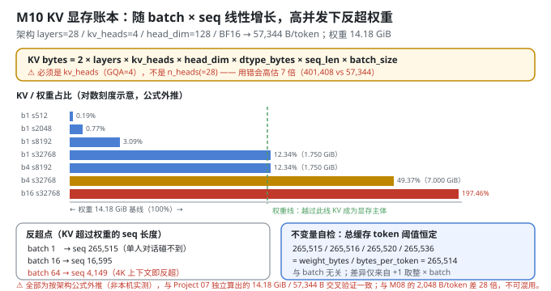
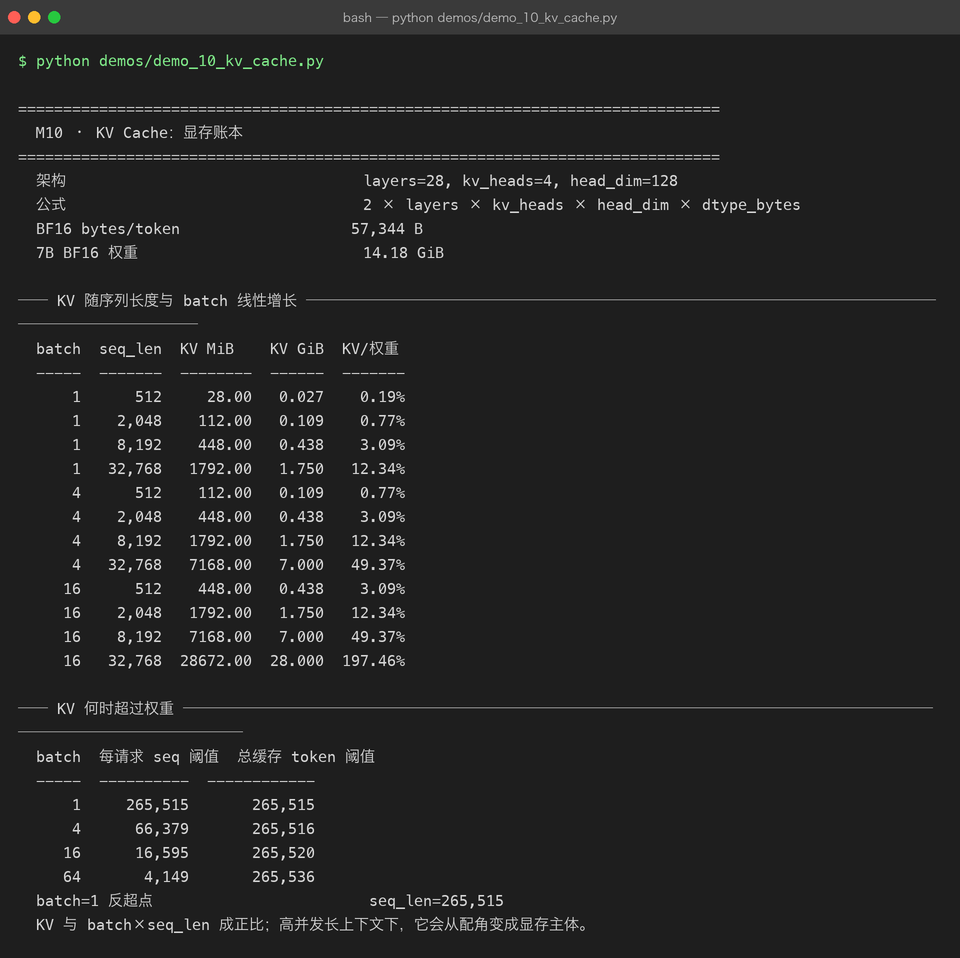

Milestone 10 — KV Cache：显存账本
M07 说 KV Cache 能省时间，M08 说分页能省空间。这一层回答一个更根本的问题：KV Cache 到底占多少显存？什么时候它会反客为主，成为显存的主体？
答案是：它和 batch_size × seq_len 成正比，而且比例系数大到反直觉 —— 在高并发长上下文下，KV Cache 能轻松超过模型权重本身。
⚠ 诚实标注（读本章前必看）：本章的 7B 相关数字全部是按架构公式计算的，不是本机实测。 本机跑不动 7B。这些数字与 Project 07 已经算过的显存账本对齐（7B BF16 权重 14.18 GiB、KV 57,344 B/token）—— 也就是说，这是两个项目各自独立算出同一个数的交叉验证，但仍然属于"外推"而非"实测"。
1. Why：为什么"模型有多大"不等于"要多少显存"
一个 7B 模型，BF16 权重 14.18 GiB。直觉是"买张 24 GB 的卡就够了"。这个直觉在高并发长上下文下错得离谱，因为显存至少要装三样东西：
总显存 ≈ 权重 + KV Cache + 激活值/临时缓冲其中 KV Cache 是唯一一个随请求量线性增长的项，而且它的系数不小：
KV bytes/token = 2 × layers × kv_heads × head_dim × dtype_bytes2 是 K 和 V 两份。这个公式里每一项都在"做大"它：层数 × KV 头数 × 头维度 × 序列长度 × 批大小。
2. Design：一个公式，三个视角
src/ie/kvbook.py 只做一件事 —— 把上面那个公式变成可查的账本：
bytes_per_token(KVArchitecture(layers, kv_heads, head_dim), dtype_bytes)
= 2 × layers × kv_heads × head_dim × dtype_bytes
kv_cache_bytes(arch, seq_len, batch_size, dtype_bytes)
= bytes_per_token(arch) × seq_len × batch_size
sequence_length_to_exceed_weights(arch, weight_bytes, batch_size, dtype_bytes)
= floor(weight_bytes / (bytes_per_token × batch_size)) + 1 # KV 反超权重的序列长度三个视角分别回答：
| 函数 | 回答 |
|---|---|
bytes_per_token | 每存 1 个 token 的 KV 要多少字节（架构常数） |
memory_table | 给定 (batch, seq)，KV 占多少 GiB、是权重的百分之几 |
sequence_length_to_exceed_weights | 反超点：多长的序列会让 KV 超过权重 |
第三个最有决策价值：反超点之前，显存规划看权重；反超点之后，显存规划看 KV。

3. Real-run evidence（来自 demos/out/demo_10_kv_cache_terminal.txt）
参考架构（Qwen2-7B 形态，与 P07 对齐）：layers=28, kv_heads=4, head_dim=128，BF16（dtype_bytes=2）。
架构 layers=28, kv_heads=4, head_dim=128
公式 2 × layers × kv_heads × head_dim × dtype_bytes
BF16 bytes/token 57,344 B
7B BF16 权重 14.18 GiB验算：2 × 28 × 4 × 128 × 2 = 57,344 B/token ✓
3.1 KV 随序列长度与 batch 线性增长（公式外推）
| batch | seq_len | KV MiB | KV GiB | KV / 权重 |
|---|---|---|---|---|
| 1 | 512 | 28.00 | 0.027 | 0.19% |
| 1 | 2,048 | 112.00 | 0.109 | 0.77% |
| 1 | 8,192 | 448.00 | 0.438 | 3.09% |
| 1 | 32,768 | 1,792.00 | 1.750 | 12.34% |
| 4 | 512 | 112.00 | 0.109 | 0.77% |
| 4 | 2,048 | 448.00 | 0.438 | 3.09% |
| 4 | 8,192 | 1,792.00 | 1.750 | 12.34% |
| 4 | 32,768 | 7,168.00 | 7.000 | 49.37% |
| 16 | 512 | 448.00 | 0.438 | 3.09% |
| 16 | 2,048 | 1,792.00 | 1.750 | 12.34% |
| 16 | 8,192 | 7,168.00 | 7.000 | 49.37% |
| 16 | 32,768 | 28,672.00 | 28.000 | 197.46% |
这张表最值得记住的一行是最后一行：batch=16, seq=32,768 时 KV Cache 达 28.00 GiB，是权重（14.18 GiB）的 197.46% —— 接近两倍。
对角线规律很明显：batch × seq_len 相同的格子，KV 占比完全相同（1×2048、4×512 都是 0.77%；16×512、4×2048、1×8192... 等等）。这直接验证了"KV ∝ batch × seq_len"。
3.2 KV 何时超过权重（公式外推）
| batch | 每请求 seq 阈值 | 总缓存 token 阈值 |
|---|---|---|
| 1 | 265,515 | 265,515 |
| 4 | 66,379 | 265,516 |
| 16 | 16,595 | 265,520 |
| 64 | 4,149 | 265,536 |
三个读数：
- 单请求（batch=1）要 seq 265,515 才反超 —— 这个长度远超当前任何模型的上下文窗口。所以"单人对话"场景里 KV 永远不是瓶颈，权重才是。
- batch=64 时每请求只要 seq 4,149 就反超 —— 4K 上下文是今天最普通的量级。高并发下 KV 立刻变成显存主体。
- "总缓存 token 阈值"四行几乎恒定（265,515 / 265,516 / 265,520 / 265,536） —— 这是账本的自检，见 4.3。

4. 踩坑 / 反直觉发现
4.1 ⚠ 公式里必须是 kv_heads，不是 n_heads —— 用错会高估 7 倍
这是 GQA（Grouped Query Attention）带来的坑。Qwen2-7B 有 28 个 query 头，但只有 4 个 KV 头：每 7 个 query 头共享 1 组 K/V。
正确：2 × 28 层 × 4 KV头 × 128 × 2 B = 57,344 B/token
错误：2 × 28 层 × 28 头 × 128 × 2 B = 401,408 B/token ← 高估 7.0 倍差别是整整 7 倍。用错的话，batch=16, seq=32768 的 KV 会被算成 196 GiB 而不是 28 GiB —— 你会得出"这个配置根本不可能"的错误结论，而实际上一张 A100 80G 是能跑的。
本项目把 kv_heads 单独作为 KVArchitecture 的一个字段（而不是复用 n_heads），就是为了逼着写公式的人回答"这里该用哪个"。
可迁移的经验：copy 一个显存公式之前，先确认它用的是
n_heads还是n_kv_heads。 网上大量的估算脚本是 MHA 时代写的，在 GQA / MQA 模型上会系统性高估。
4.2 反超点把"显存规划"切成两个完全不同的问题
| 场景 | 显存主体 | 优化方向 |
|---|---|---|
| batch=1，seq < 265K | 权重（14.18 GiB） | 量化权重（M06）、模型切分 |
| batch=64，seq > 4,149 | KV Cache（可达权重的 2 倍） | 分页（M08）、KV 量化、MQA/GQA、卸载、前缀共享 |
这两类问题的解法几乎不重叠：量化权重对 KV 一点用没有（KV 是运行时产生的激活，不是权重）；分页对权重一点用没有。
具体到 batch=16, seq=32,768：14.18 + 28.00 = 42.18 GiB。这个配置在 A100 80GB 上可行，在 24 GB 的卡（A10 / RTX 4090）上绝无可能 —— 而如果只看权重，你会以为 24 GB 绰绰有余。
可迁移的经验：做容量规划时，先算反超点，再决定优化什么。 盲目量化权重是最常见的时间浪费。
4.3 "总缓存 token 阈值"恒定 ≈ 265.5K —— 这是账本的自检
四行的"总缓存 token 阈值"是 265,515 / 265,516 / 265,520 / 265,536，几乎完全相同。这不是巧合：
总阈值 = 每请求 seq 阈值 × batch
≈ (weight_bytes / (bytes_per_token × batch)) × batch
= weight_bytes / bytes_per_token
= 15,225,659,064 / 57,344 = 265,514 ← 与 batch 无关"KV 超过权重所需的总缓存 token 数"是一个与 batch 无关的量 —— 它只取决于"权重大"和"每个 token 的 KV 大"两个量。微小差异（265,515 ~ 265,536）全部来自 +1 的取整在乘 batch 后被放大。
这个恒等式是账本正确性的自检：如果哪天四行差别很大，说明公式或取整写错了。
这和 M08 的"池守恒 8+24=32"、M09 的"busy 恒为 110"是同一类思路 —— 找一个策略/参数无关的不变量，用它验证计算。
4.4 与 M08 的 2,048 B/token 差整整 28 倍 —— 别混用
| M08（玩具模型） | M10（7B 参考） | |
|---|---|---|
| 架构 | layers=2, heads=4, head_dim=16 | layers=28, kv_heads=4, head_dim=128 |
| dtype | fp64（dtype_bytes=8，与 P06 模型一致） | BF16（dtype_bytes=2） |
| B/token | 2,048 | 57,344 |
| 比值 | — | 恰好 28 倍 |
57,344 / 2,048 = 28.0，正好是 (28 层 / 2 层) × (128 / 16) × (2 B / 8 B) 的乘积。
两个数字都对，但属于不同的模型、不同的 dtype。引用时必须带上口径 —— 这也是为什么 M08 的文档里专门标了"本章 dtype_bytes=8 与 M10 的 BF16 不可直接对比"。
4.5 本章数字全是外推，不是实测 —— 但有两个交叉验证
必须说清楚可信度来源：
- 不是本机实测：本机（
d_model=64的玩具模型）跑不动 7B，也拿不到真实 GPU 显存读数。 - 与 P07 交叉验证：Project 07 的显存账本独立算过同样的两个数 —— 7B BF16 权重 14.18 GiB、KV 57,344 B/token。两个项目用各自的代码得出同一个结果，说明公式和参数没有抄错。
- 与 M08 交叉验证：同一公式在玩具架构上给出 2,048 B/token，与 M08 一致。
所以本章数字应读作"按架构公式外推，且与 P07 独立计算结果一致"，而不是"实测"。memory_table 里那些 GiB 数字，是真机上应该出现的值，不是本机观测到的值。
4.6 KV 量化是把账本砍半的最直接手段
公式里 dtype_bytes 是线性项，所以：
| KV dtype | bytes/token | 相对 BF16 |
|---|---|---|
| FP16 / BF16 | 57,344 | 1.00× |
| INT8 / FP8 | 28,672 | 0.50× |
| INT4 | 14,336 | 0.25× |
KV 从 BF16 压到 INT8，显存直接减半 —— 反超点也会相应翻倍（batch=64 时从 seq 4,149 抬到 8,298）。
而且 KV 量化比权重量化更容易：KV 是运行时产生的激活，可以用"校准集"确定量化范围，也可以按通道/按头做粒度。工业界（vLLM、TensorRT-LLM）已经把 FP8 KV 作为标准选项。
但要注意：本章账本没有包含 KV 量化，表里全是 BF16。这是刻意的 —— 先给出一个干净的基准，量化是可以叠加在上面的独立变量。
5. Conclusion
- KV 显存公式：
2 × layers × kv_heads × head_dim × dtype_bytes × seq_len × batch_size。参考架构（28 层 / 4 KV 头 / head_dim 128 / BF16）→ 57,344 B/token。 - KV ∝ batch × seq_len：表里的对角线（
batch×seq相同 → 占比相同）直接验证了这一点。 - 实测（公式外推）：
batch=16, seq=32,768→ KV 28.00 GiB，达权重的 197.46%（权重 14.18 GiB，合计 42.18 GiB —— A100 80G 可行，24 GB 卡不行）。 - 反超点：batch 1 → seq 265,515（单人对话永远碰不到）；batch 4 → 66,379；batch 16 → 16,595；batch 64 → 4,149（高并发下 4K 上下文即反超）。
- ⚠ 公式里必须用
kv_heads（GQA=4），用n_heads（=28）会高估 7 倍（401,408 vs 57,344）。 - 反超点把显存规划切成两个问题：之前优化权重（量化、切分），之后优化 KV（分页、KV 量化、GQA、前缀共享）—— 两类解法几乎不重叠。
- "总缓存 token 阈值"恒定 ≈ 265,514（
weight_bytes / bytes_per_token，与 batch 无关）—— 账本自检不变量。 - 与 M08 的 2,048 B/token 差 28 倍（架构 + dtype 都不同），引用必须带口径。
- ⚠ 全部数字是公式外推，非本机实测；但与 P07 独立算出的 14.18 GiB / 57,344 B 交叉验证一致。
- KV 量化到 INT8 可直接减半（反超点翻倍），且比权重量化更容易 —— 本章账本为干净基准，未叠加该变量。
- 手写实现的意义：因为公式是自己写的，我才能把它拆成"架构常数 × 序列 × 批"三段并做对角线自检 —— 用现成的显存计算器只能拿到一个总数，无法验证。
6. Code map
| 文件 | 职责 |
|---|---|
src/ie/kvbook.py | KVArchitecture（layers / kv_heads / head_dim 三字段分离，逼你区分 query 头与 KV 头）/ bytes_per_token / kv_cache_bytes / memory_table（batch × seq 二维表 + vs_weights 占比）/ sequence_length_to_exceed_weights（反超点）/ model_weight_bytes / qwen7b_reference（从 28 层 / 4 KV 头 / 128 重推 P07 的数字） |
src/ie/kvbook.py:23 | 2 * layers * kv_heads * head_dim * dtype_bytes —— 核心公式，kv_heads 而非 n_heads |
src/ie/kvbook.py:68 | math.floor(weight_bytes / per_position) + 1 —— 反超点（+1 保证"严格超过"） |
demos/demo_10_kv_cache.py | 3 节：架构与公式 / KV 增长表 / 反超点表 |
demos/out/demo_10_kv_cache_terminal.txt | 本章所有数字的来源 |
assets/kv-cache.svg | 本章 KV 显存增长与反超点图 |
7. Version line
v0.9 → v0.10，M10 KV Cache 显存账本落地。参考架构 layers=28 / kv_heads=4 / head_dim=128、BF16：每 token 57,344 B、7B BF16 权重 14.18 GiB；增长表显示 batch=16 @ seq=32,768 时 KV 达 28,672 MiB = 28.000 GiB，为权重的 197.46%（合计 42.18 GiB）；反超点 batch 1 → seq 265,515 / batch 4 → 66,379 / batch 16 → 16,595 / batch 64 → 4,149。并诚实记录「⚠ 本章 7B 数字全部是按架构公式外推、非本机实测，但与 Project 07 独立算出的 14.18 GiB / 57,344 B 交叉验证一致」「公式必须用 kv_heads（GQA=4），误用 n_heads(=28) 会高估 7 倍 → 401,408 B/token」「总缓存 token 阈值恒定 ≈ 265,514（与 batch 无关），是账本自检不变量」「与 M08 的 2,048 B/token 差 28 倍（架构 + dtype 均不同），不可混用」。纯 Python 标准库 + numpy，无 GPU 实测。配图 1 张手写 SVG + 1 张真实终端截图。